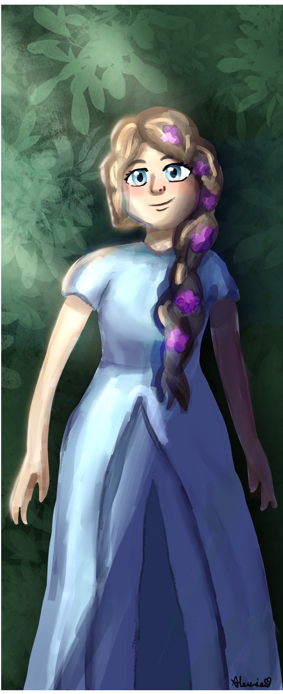
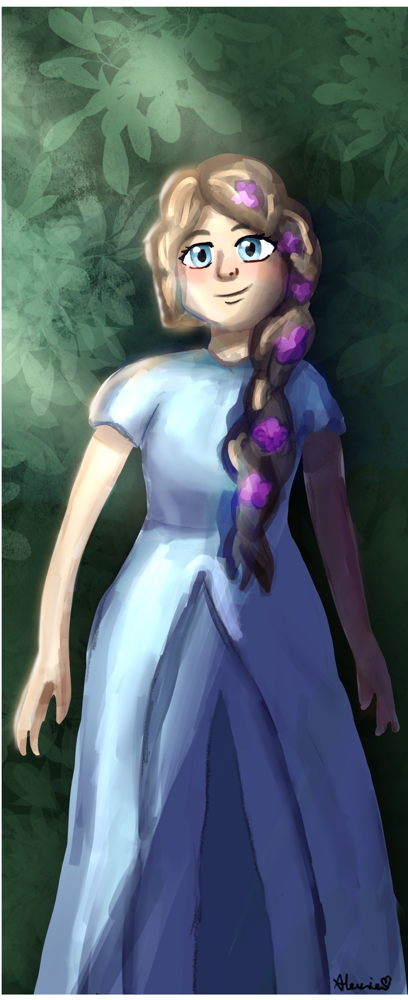

BrIef summary
"A Tale of Magic" by Chris Colfer follows the journey of a young girl named Brystal Evergreen who lives in a society where magic is strictly prohibited. Brystal discovers her own magical abilities and is subsequently sent to a prison-like institution for those who practice magic. However, she meets other young magic wielders and together they uncover a plot to overthrow the oppressive government. Throughout the story, they navigate danger, betrayal, and the complexities of power, ultimately fighting for the right to freely practice magic and challenge the status quo. Along the way, they learn about friendship, courage, and the importance of standing up for what is right.
 
